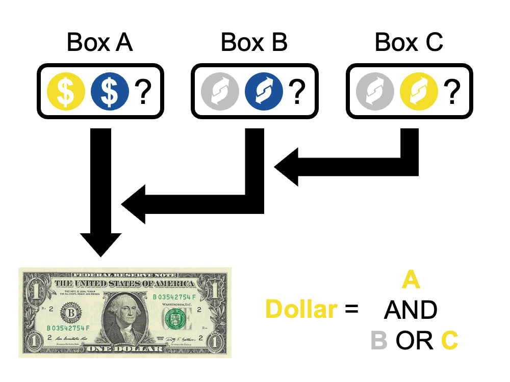

<!Doctype html>
<meta charset="UTF-8">
<html>

<head>
    <title>A study about causal reasoning</title>
    <script src="https://unpkg.com/jspsych@7.3.1"></script>
    <script src="https://unpkg.com/@jspsych/plugin-external-html@1.1.1"></script>
    <script src="https://unpkg.com/@jspsych/plugin-instructions@1.1.4"></script>
    <script src="https://unpkg.com/@jspsych/plugin-survey-text@1.1.2"></script>
    <script src="https://unpkg.com/@jspsych/plugin-survey-multi-choice@1.1.2"></script>
    <script src="https://unpkg.com/@jspsych/plugin-html-slider-response@1.1.2"></script>
    <script src="https://unpkg.com/@jspsych/plugin-html-button-response@1.1.3"></script>
    <link href="https://unpkg.com/jspsych@7.3.0/css/jspsych.css" rel="stylesheet" type="text/css">
    </link>
    <script src="https://ajax.googleapis.com/ajax/libs/jquery/3.4.1/jquery.min.js"></script>

    <!--- CSS classes to show/hide the slider thumb  --->
    <style>
        .hidden::-webkit-slider-thumb {
            visibility: hidden;
        }

        .hidden::-moz-range-thumb {
            visibility: hidden;
        }
    </style>
</head>

<body>
    <div id="experiment"></div>
</body>

</html>

<script>
    // Helper function to color HTML text
    var YELLOW = '#F3DE2C';
    var BLUE = '#1B5299';
    var GRAY = '#BFBFBF';
    function color(text, color) {
        return "<span style='color: " + color + "; font-weight: bold;'>" + text + "</span>"
    }

    // Set up jsPsych
    var jsPsych = initJsPsych({
        display_element: 'experiment',
        experiment_width: 700,
        on_finish: async function (data) {
            // Display completion screen
            jsPsych.getDisplayElement().innerHTML =
                '<div><p>Thanks for completing this experiment!</p>' +
                '<p>Saving your data now......' +
                '<span id="done" style="visibility: hidden;">done!</span></p></div><br><br>' +
                '<p>You will be automatically redirected back to Prolific once the data is saved.</p>';

            //  Save data via HTTP POST
            let dataToServer = {
                'id': id,
                'extension': 'csv',
                'directory': 'data',
                'experimentName': 'experiment3',
                'curData': data.csv()
            };
            await $.post("https://dibs-web01.vm.duke.edu/debrigard/double-prevention-reversal/experiment/save.php",
                dataToServer,
                function (data) {
                    document.getElementById('done').style.visibility = "visible";

                    // Re-direct back to Prolific if  is present
                    if (jsPsych.data.getURLVariable('PROLIFIC_PID') != null)
                        setTimeout(function () {
                            // TODO: fill in prolific code
                            window.location = "https://app.prolific.co/submissions/complete?cc=XXXXXXXXX";
                        }, 3000);
                }).promise().catch(function () { });
        }
    });

    /* Randomly assign a condition */
    var id = jsPsych.randomization.randomID();
    var conditions = {
        condition: [
            { name: 'reversal', p_PF: .9, p_PP: .9, p_DP: .1 },
            { name: 'adversarial', p_PF: .9, p_PP: .1, p_DP: .1 }],
        factor: ['productive_factor', 'double_preventer']
    };

    var condition = jsPsych.randomization.sampleWithoutReplacement(jsPsych.randomization.factorial(conditions, 1), 1)[0];
    condition.num_learning = 20; // show this many trials to learn the probabilities
    condition.p_PF = condition.condition.p_PF;
    condition.p_PP = condition.condition.p_PP;
    condition.p_DP = condition.condition.p_DP;
    condition.condition = condition.condition.name;
    console.log('ID: ' + id);
    console.log('condition: ' + condition.condition);
    console.log('P(PF): ' + condition.p_PF);
    console.log('P(PP): ' + condition.p_PP);
    console.log('P(DP): ' + condition.p_DP);
    console.log('factor: ' + condition.factor);
    console.log('number of learning trials: ' + condition.num_learning);

    /* Create learning trial data */
    function bernoulli_array(N, p) {
        let N_1 = Math.round(N * p);
        let N_0 = N - N_1;
        return jsPsych.randomization.shuffle(new Array(N_1).fill(1).concat(new Array(N_0).fill(0)));
    }
    var PF = bernoulli_array(condition.num_learning, condition.p_PF);
    var PP = bernoulli_array(condition.num_learning, condition.p_PP);
    var DP = bernoulli_array(condition.num_learning, condition.p_DP);
    var learning_params = new Array(condition.num_learning);
    for (let i = 0; i < condition.num_learning; i++) {
        let E = Number(PF[i] && (!PP[i] || DP[i]));
        learning_params[i] = { trial: i + 1, PF: PF[i], PP: PP[i], DP: DP[i], E: E };
    }

    /* Capture info from Prolific */
    jsPsych.data.addProperties({
        id: id,
        prolific_id: jsPsych.data.getURLVariable('PROLIFIC_PID'),
        study_id: jsPsych.data.getURLVariable('STUDY_ID'),
        session_id: jsPsych.data.getURLVariable('SESSION_ID')
    });
    jsPsych.data.addProperties(condition);

    /* Get informed consent */
    var consent = {
        type: jsPsychExternalHtml,
        url: "consent.html",
        cont_btn: "start",
        on_load: function () {
            document.getElementById('duration').innerHTML = '5';
        },
        check_fn: function () {
            if (!document.getElementById('consent_checkbox').checked) {
                alert("If you wish to participate, you must check the box next to the statement 'I consent to participate in this study.'");
                return false;
            }
            return true;
        }
    };

    var instructions = {
        type: jsPsychInstructions,
        pages: [
            `<p>In this study you will be asked to learn the rules of a simple game, study ` + condition.num_learning +
            ` plays of the game, and finally to read a short story and answer one question about that story.</p>
            <p><strong>Please take your time to read the instructions and respond to the question carefully.</strong></p>`,

            `<div align='left'><p>
                A carnival stand is hosting a game in which one ` + color('yellow player', YELLOW) + ` and one ` + color('blue player', BLUE) + ` play against each other to win a dollar. 
                In this game, there are three boxes (Boxes A, B, and C) with some mixture of ` + color('yellow', YELLOW) + `, ` + color('blue', BLUE) + `, and ` + color('gray', GRAY) + ` balls. 
                Yellow balls tend to benefit the yellow player, blue balls tend to benefit the blue player, and gray balls don’t do anything.
                The players can't see into the boxes, so they don’t know how many balls of each color there are inside of each box.
            </p><p><strong>The rules of the game are summarized in this image:</strong></p></div>
            </img><br>
            <div align='left'><p>
                The yellow player draws a ball from Box A, which contains yellow and blue balls.
                If the ` + color('yellow player draws a yellow ball from Box A', YELLOW) + `, then they win the dollar.
                If ` + color('they draw a blue ball from Box A', BLUE) + `, then the blue player wins the dollar.
            </p><p>
                The blue player draws a ball from Box B, which contains blue and gray balls.
                If the ` + color('blue player draws a blue ball from Box B', BLUE) + `, this reverses the color of the ball drawn from Box A from yellow to blue, in favor of the blue player.
                If the ` + color('blue player draws a gray ball from Box B', GRAY) + ` or if the ` + color('yellow player already drew a blue ball from Box A', BLUE) + `, then nothing changes.
            </p><p>
                Finally, the yellow player also draws a ball from Box C, which contains yellow and gray balls.
                If the ` + color('yellow player draws a yellow ball from Box C', YELLOW) + `, this reverses the color of the ball drawn from Box B from blue to gray, in favor of the yellow player.
                If the ` + color('yellow player drew a gray ball from Box C', GRAY) + ` or if the ` + color('blue player already drew a gray ball from Box B', GRAY) + `, then nothing changes.
            </p>
            <p>So, overall, the ` + color('yellow player', YELLOW) + ` wins the dollar if:
                <ol>
                    <li>The ` + color('yellow player draws a yellow ball from Box A', YELLOW) + `, AND</li>
                    <li>
                        <ol type="a">
                            <li>EITHER the ` + color("blue player doesn't draw a blue ball from Box B", GRAY) + `</li>
                            <li>OR the ` + color('blue player draws a blue ball', BLUE) + ` from Box B, <br>but the ` + color('yellow player draws a yellow ball from Box C', YELLOW) + `.</li>
                        </ol>
                    </li>
                </ol>
                Otherwise, the ` + color('blue player wins the dollar', BLUE) + `.</p></div>`,

            `<p>Over the course of the day, lots of people come to the carnival stand to play this game.
                We will show you the results of ` + condition.num_learning + ` different rounds of the game. 
                To familiarize you with the rules of the game and the contents of each of the three boxes, 
                please determine which player won the dollar.</p>
            <p><strong>Please also pay attention to the contents of each box. Later on, you will be asked to determine what is inside each box.</strong></p>`
        ],
        show_clickable_nav: true
    };

    var learning = {
        timeline: [{
            timeline: [{
                type: jsPsychHtmlButtonResponse,
                stimulus: function () {
                    trial = jsPsych.timelineVariable('trial');
                    PF = jsPsych.timelineVariable('PF');
                    PP = jsPsych.timelineVariable('PP');
                    DP = jsPsych.timelineVariable('DP');
                    E = jsPsych.timelineVariable('E');

                    return '<p align="left">Game ' + trial + ' of ' + condition.num_learning + ':</p>' +
                        '<p>' + (PF ? color('The yellow player drew a yellow ball from Box A.', YELLOW) : color('The yellow player drew a blue ball from Box A.', BLUE)) + '<br>' +
                        (PP ? color('The blue player drew a blue ball from Box B.', BLUE) : color('The blue player drew a gray ball from Box B.', GRAY)) + '<br>' +
                        (DP ? color('The yellow player drew a yellow ball from Box C.', YELLOW) : color('The yellow player drew a gray ball from Box C.', GRAY)) + 
                        '</p><br><strong>Based on these results, which player won the dollar?</strong><br><br>'
                },
                choices: [color('Blue', BLUE), color('Yellow', YELLOW)],
                post_trial_gap: 100,
                data: function () {
                    return {
                        PF: jsPsych.timelineVariable('PF'),
                        PP: jsPsych.timelineVariable('PP'),
                        DP: jsPsych.timelineVariable('DP'),
                        E: jsPsych.timelineVariable('E')
                    }
                }
            }, {
                type: jsPsychInstructions,
                pages: function () {
                    let r = jsPsych.data.getLastTrialData().values()[0].response;
                    let e = jsPsych.data.getLastTrialData().values()[0].E;
                    let s = '<p style="font-weight: bold; color: green;">Correct!</p>';
                    if (r != e) {
                        s = `<p style="font-weight: bold; color: red;">Incorrect, please try again.</p>
                            <div align='left'><p>Remember that the ` + color('yellow player', YELLOW) + ` wins the dollar if:
                            <ol>
                                <li>The ` + color('yellow player draws a yellow ball from Box A', YELLOW) + `, AND</li>
                                <li>
                                    <ol type="a">
                                        <li>EITHER the ` + color("blue player doesn't draw a blue ball from Box B", GRAY) + `</li>
                                        <li>OR the ` + color('blue player draws a blue ball', BLUE) + ` from Box B, <br>but the ` + color('yellow player draws a yellow ball from Box C', YELLOW) + `.</li>
                                    </ol>
                                </li>
                            </ol>
                            Otherwise, the ` + color('blue player', BLUE) + ` wins the dollar.</p></div>
                            </img>
                            `;
                    }
                    return ['<p align="left">Team ' + trial + ' of ' + condition.num_learning + ':</p>' + s];
                }, show_clickable_nav: true
            }],
            // each trial, check for the correct response and repeat if incorrect
            loop_function: function (d) {
                return d.values()[0].response != d.values()[0].E;
            }
        }],
        timeline_variables: learning_params
    };

    var manipulation_check = {
        timeline: [{
            type: jsPsychHtmlSliderResponse,
            min: 0, max: 1, step: 'any', slider_start: .5, require_movement: true,
            labels: function () {
                return ['only ' + color(jsPsych.timelineVariable('color_0_txt') + ' balls', jsPsych.timelineVariable('color_0')),
                        'half ' + color(jsPsych.timelineVariable('color_0_txt') + ' balls', jsPsych.timelineVariable('color_0')) + 
                        ' and half ' + color(jsPsych.timelineVariable('color_1_txt') + ' balls', jsPsych.timelineVariable('color_1')),
                        'only ' + color(jsPsych.timelineVariable('color_1_txt') + ' balls', jsPsych.timelineVariable('color_1'))] 
            },
            stimulus: function () {
                return '<p>What is inside of Box ' + jsPsych.timelineVariable('box') + '?</p>'
            },
            data: function () {
                return {
                    measure: 'manipulation_check',
                    box_factor: jsPsych.timelineVariable('box_factor'),
                    box: jsPsych.timelineVariable('box')
                }
            },
            // Hide the slider thumb until response
            on_load: function () {
                document.getElementById('jspsych-html-slider-response-response').classList.add('hidden');
                document.getElementById('jspsych-html-slider-response-response').addEventListener('click', function (e) {
                    e.target.classList.remove('hidden');
                });
            }
        }],
        timeline_variables: [{ 
            box: 'A', box_factor: 'PF', color_0: BLUE, color_0_txt: 'blue', color_1: YELLOW, color_1_txt: 'yellow' 
        }, { 
            box: 'B', box_factor: 'PP', color_0: GRAY, color_0_txt: 'gray', color_1: BLUE, color_1_txt: 'blue'
        }, { 
            box: 'C', box_factor: 'DP', color_0: GRAY, color_0_txt: 'gray', color_1: YELLOW, color_1_txt: 'yellow'
        }]
    }

    var vignette_instructions = {
        type: jsPsychInstructions,
        pages: [`<p>Now that you are familiar with the rules of the game and the contents of each box, we will tell you about one more round of the game and ask you about what happened.</p>
                 <p><strong>Please take your time to read the story and respond carefully.</strong></p>`],
        show_clickable_nav: true
    };

    var vignette = {
        timeline: [{
            type: jsPsychHtmlSliderResponse,
            min: 0, max: 1, step: 'any', slider_start: .5, require_movement: true,
            labels: ['strongly disagree', 'neither agree nor disagree', 'strongly agree'],
            stimulus: function () {
                let question = 'Yolanda drawing a yellow ball from Box A caused her to win the dollar.';
                if (jsPsych.timelineVariable('factor') == 'double_preventer')
                    question = 'Yolanda drawing a yellow ball from Box C caused her to win the dollar.';

                return `<p>Next, ` + color('Yolanda', YELLOW) + ` and ` + color('Bella', BLUE) + ` came to the carnival stand to play the game.
                        Remember that ` + color('Yolanda', YELLOW) + ` wins the dollar if ` + color('she draws a yellow ball from Box A', YELLOW) + `, and if either ` + 
                        color("Bella doesn't draw a blue ball from Box B", GRAY) + `, or if ` + color('Bella draws a blue ball from Box B', BLUE) + ` but ` + 
                        color('Yolanda draws a yellow ball from Box C', YELLOW) + `:</p>

                        </img>

                        <p>At the same time, ` + color('Yolanda', YELLOW) + ` and ` + color('Bella', BLUE) + ` draw balls from Box A, Box B, and Box C. Here's what they got:</p>
                        <p>` + color('Yolanda drew a yellow ball from Box A.', YELLOW) + `<br>` + 
                        color('Bella drew a blue ball from Box B.', BLUE) + `<br>` + 
                        color('Yolanda drew a yellow ball from Box C.', YELLOW) + `</p>
                        <p>So, Yolanda won the dollar.<p><br>
                        <p style="text-align: center;"><strong>To what degree do you agree with the following statement?</strong></p>` +
                    '<p>' + question + '</p>';
            },
            data: function () {
                return {
                    measure: 'vignette',
                    condition: jsPsych.timelineVariable('condition'),
                    factor: jsPsych.timelineVariable('factor')
                }
            },

            // Hide the slider thumb until response
            on_load: function () {
                document.getElementById('jspsych-html-slider-response-response').classList.add('hidden');
                document.getElementById('jspsych-html-slider-response-response').addEventListener('click', function (e) {
                    e.target.classList.remove('hidden');
                });
            }
        }],
        timeline_variables: [condition]
    };

    /* Display post-questionnaire */
    var age = {
        timeline: [{
            type: jsPsychSurveyText,
            questions: [{ name: "age", prompt: "What is your age?", requiblue: true }],
            on_finish: function (data) {
                data.measure = "age";
                data.response = parseInt(data.response.age);
            }
        }],
        loop_function: function (data) {
            let response = parseInt(data.values()[0].response);
            if (isNaN(response)) alert("Please enter in your age as a number.");
            if (!isNaN(response) & (response <= 0 || response > 150)) alert("Please enter a valid age.");
            return isNaN(response) || response <= 0 || response > 150;
        }
    };

    var gender = {
        type: jsPsychSurveyMultiChoice,
        questions: [{
            name: 'gender', type: 'multi-choice', prompt: 'What is your gender?',
            options: jsPsych.randomization.shuffle(['Male', 'Female', 'Other']),
            option_reorder: 'random', requiblue: true
        }],
        on_finish: function (data) {
            data.measure = "gender";
            data.response = data.response.gender;
        }
    };

    var attn_check = {
        type: jsPsychSurveyMultiChoice,
        questions: [{
            name: 'attn_check', type: 'multi-choice', requiblue: true,
            prompt: `<p align='left'> Please be honest when answering the following question.
                    <b> Your answer will not affect your payment or eligibility for future studies.</b></p>
                    <p align='left'>The study you have just participated in is a psychological study aimed at understanding human cognition and behavior.
                    Psychological research depends on participants like you.
                    Your responses to surveys like this one are an incblueibly valuable source of data for researchers.
                    It is therefore crucial for research that participants pay attention, avoid distractions,
                    and take all study tasks seriously (even when they might seem silly).</p>
                    <p align='left'><b>Do you feel that you paid attention, avoided distractions, and took this survey seriously?</b></p>`,
            options: jsPsych.randomization.shuffle(["No, I was distracted.",
                "No, I had trouble paying attention",
                "No, I did not take the study seriously",
                "No, something else affected my participation negatively.",
                "Yes."])
        }],
        on_finish: function (data) {
            data.measure = "attention_check";
            data.response = data.response.attn_check;
        }
    };

    var comments = {
        type: jsPsychSurveyText,
        questions: [{ name: 'comments', type: 'text', prompt: "Do you have anything else to add (comments, questions, etc)?", rows: 10 }],
        on_finish: function (data) {
            data.measure = "comments";
            data.response = data.response.comments;
        }
    }

    /* start the experiment */
    jsPsych.run([consent, instructions, learning, manipulation_check, vignette_instructions, vignette, age, gender, attn_check, comments]);
</script>